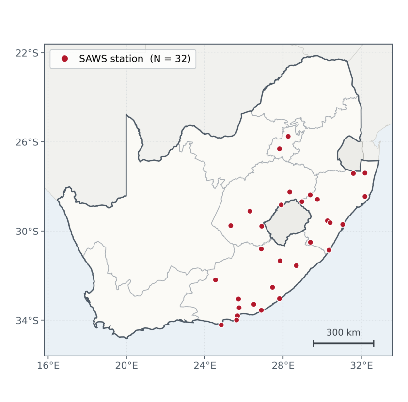
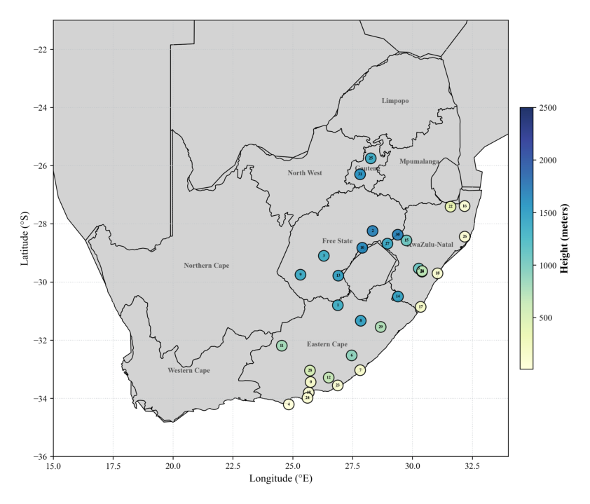
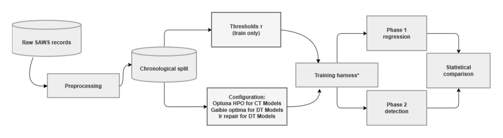

Workstream 1
Continuous-time
Praise Jaravani
MTGODE · STGODE
Replaces discrete layers with a neural ODE, so depth becomes integration time and the latent trajectory is continuous.
Honours project · CSC4002W · University of Cape Town
Do newer spatio-temporal graph neural networks forecast South African weather better than the models we already had — and do they hold up when the weather is extreme?
Supervised by A/Prof Deshendran Moodley · Department of Computer Science, University of Cape Town · 2026
Weather at one station depends on its own recent past and on what is happening at nearby stations. Spatio-temporal graph neural networks (STGNNs) capture both at once by treating each station as a node in a graph whose edges carry the strength of the dependency between sites. Two earlier UCT honours projects established that this works for South African station data, but both stopped at a 24-hour horizon, both evaluated only discrete-time models, and neither treated extreme weather as a prediction target.
WeatherFLOW tests three newer families of STGNN against those established baselines, on ten years of hourly observations from 32 South African Weather Service stations, out to 48 hours — double the horizon of the prior work. All three families run through one shared pipeline, so the data, the chronological split, the loss, and the evaluation are held constant and the architecture is what varies.
Workstream 1
Praise Jaravani
MTGODE · STGODE
Replaces discrete layers with a neural ODE, so depth becomes integration time and the latent trajectory is continuous.
Workstream 2
Génevieve Chikwanha
DiffSTG · USTD
Generates the forecast by denoising, producing a distribution of possible futures rather than a single point prediction.
Workstream 3
Zoleka Fuyana
STLGRU · LiteSTGNN
Asks how much accuracy survives when the parameter budget is cut hard — what capacity actually buys.
Two shared baselines. Every workstream measures itself against the same two models, AGCRN and CLCRN, which were the strongest performers in the previous study on this data. Both are discrete-time: AGCRN learns its graph from trainable node embeddings, CLCRN builds its neighbourhoods from the stations' geographic coordinates. See Background for what each one does.
Accomplishments
Finding 1
The established baselines were hard to beat. None of the three new families delivered a clean win across all four variables. The 2023 baselines remain competitive everywhere, and on several variables they are still the most accurate models tested.
Finding 2
How a model is conditioned matters more than which paradigm it belongs to. This is the clearest cross-cutting result. Within the continuous-time pair, the neural ODE lowered error with a learned adaptive graph and raised it with a geometric one — the interaction between the two design axes was larger than either axis alone. Within the diffusion pair, the model with a deterministic spatio-temporal encoder and station-height covariates (USTD) was competitive, while the one that diffuses directly (DiffSTG) was the weakest model in the whole study. Neither family succeeds or fails as a family.
Finding 3
Capacity does not buy accuracy. The most accurate continuous-time model has 138,096 parameters against 1,663,104 for the weakest, and CLCRN — the smallest model of the four — separates from the far larger STGODE on every variable. In the lightweight workstream, STLGRU is 4.1× the size of LiteSTGNN and improves MAE by only 0.7–5.7%.
Finding 4
Average accuracy does not predict accuracy on extremes. Stratifying test error by whether the observation exceeds its station's 95th percentile, every architecture degrades — by up to a factor of 3.5 on wind speed — and the model with the lowest pooled error is not the model with the lowest error in the tail on three of four variables. All of them follow the shape of an extreme event but flatten its amplitude.
Finding 5
The architectures converge as the horizon grows. The spread between models is widest at short lead and largely gone by two days — on surface pressure it falls from 47.3% of the mean near the first lead to 3.5% at 48 hours. Which variable you are forecasting sets the error growth far more than which architecture you choose.
Shared foundation
The South African Weather Service supplied hourly observations from 60 automatic weather stations across the Free State, Gauteng, KwaZulu-Natal and the Eastern Cape. Stations missing more than 10% of their observations were excluded, following the criterion used by the earlier studies, leaving 32 stations and 87,672 hourly timesteps per station over 2016–2025. Gaps were filled by inverse-distance weighting over neighbouring stations, and the record was split chronologically — 2016–2021 to train, 2022–2023 to validate, 2024–2025 to test — before any normalisation statistic or threshold was computed, so no test information reaches training.



| Source | South African Weather Service, automatic weather stations |
|---|---|
| Stations | 32 (filtered from 60 at a 10% missingness threshold) |
| Period | 1 January 2016 – 31 December 2025, hourly |
| Timesteps | 87,672 per station |
| Recorded variables | temperature, rainfall, relative humidity, wind direction, wind speed, surface pressure |
| Forecast targets | temperature, surface pressure, relative humidity, wind speed |
| Imputation | inverse-distance weighting over nearest neighbouring stations |
| Split | chronological 60 / 20 / 20 — train 2016–2021, validate 2022–2023, test 2024–2025 |
| Normalisation | z-score, fitted on the training partition only |
| Forecast horizon | 48 hours, reported at 3, 6, 9, 12, 24 and 48 hours |
| Training loss | mean absolute error, Adam optimiser, early stopping patience 15 |
| Compute | UCT ICTS High-Performance Computing cluster (NVIDIA A100 / L40S) |
Joint deliverables
Documents produced jointly by the project appear below. Each student's own literature review and final paper are linked from that student's page, and everything the project produced is collected on the Resources page.
Still to be added. The three individual literature reviews and the final paper for the lightweight workstream are not yet on this site. Every other document is linked and working.
People
We thank the South African Weather Service for the station observations; UCT ICTS High-Performance Computing for the compute on which the experiments ran; and A/Prof Deshendran Moodley for supervision throughout. This work is based on research supported in part by the National Research Foundation of South Africa (ref. PMDS251030376307).